|
|
< Day Day Up > |
|
This advanced section further illustrates probabilistic analysis by way of four examples. The first determines the probability that in a room of k people, some pair shares the same birthday. The second example examines the random tossing of balls into bins. The third investigates "streaks" of consecutive heads in coin flipping. The final example analyzes a variant of the hiring problem in which you have to make decisions without actually interviewing all the candidates.
Our first example is the birthday paradox. How many people must there be in a room before there is a 50% chance that two of them were born on the same day of the year? The answer is surprisingly few. The paradox is that it is in fact far fewer than the number of days in a year, or even half the number of days in a year, as we shall see.
To answer this question, we index the people in the room with the integers 1, 2, ..., k, where k is the number of people in the room. We ignore the issue of leap years and assume that all years have n = 365 days. For i = 1, 2, ..., k, let bi be the day of the year on which person i's birthday falls, where 1 ≤ bi ≤ n. We also assume that birthdays are uniformly distributed across the n days of the year, so that Pr {bi = r} = 1/n for i = 1, 2, ..., k and r = 1, 2, ..., n.
The probability that two given people, say i and j, have matching birthdays depends on whether the random selection of birthdays is independent. We assume from now on that birthdays are independent, so that the probability that i's birthday and j's birthday both fall on day r is
|
Pr {bi = r and bj = r} |
= |
Pr{bi = r}Pr{bj = r} |
|
= |
1/n2. |
Thus, the probability that they both fall on the same day is
More intuitively, once bi is chosen, the probability that bj is chosen to be the same day is 1/n. Thus, the probability that i and j have the same birthday is the same as the probability that the birthday of one of them falls on a given day. Notice, however, that this coincidence depends on the assumption that the birthdays are independent.
We can analyze the probability of at least 2 out of k people having matching birthdays by looking at the complementary event. The probability that at least two of the birthdays match is 1 minus the probability that all the birthdays are different. The event that k people have distinct birthdays is
where Ai is the event that person i's birthday is different from person j's for all j < i. Since we can write Bk = Ak ∩ Bk-1, we obtain from equation (C.16) the recurrence
where we take Pr{B1} = Pr{A1} = 1 as an initial condition. In other words, the probability that b1, b2, ..., bk are distinct birthdays is the probability that b1, b2, ..., bk-1 are distinct birthdays times the probability that bk ≠ bi for i = 1, 2, ..., k - 1, given that b1, b2, ..., bk-1 are distinct.
If b1, b2, ..., bk-1 are distinct, the conditional probability that bk ≠ bi for i = 1, 2, ..., k - 1 is Pr {Ak | Bk-1} = (n - k + 1)/n, since out of the n days, there are n - (k - 1) that are not taken. We iteratively apply the recurrence (5.8) to obtain
Inequality (3.11), 1 + x ≤ ex, gives us
when -k(k - 1)/2n ≤ ln(1/2). The probability that all k birthdays are distinct is at most 1/2 when k(k - 1) = 2n ln 2 or, solving the quadratic equation, when 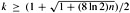. For n = 365, we must have k ≥ 23. Thus, if at least 23 people are in a room, the probability is at least 1/2 that at least two people have the same birthday. On Mars, a year is 669 Martian days long; it therefore takes 31 Martians to get the same effect.
We can use indicator random variables to provide a simpler but approximate analysis of the birthday paradox. For each pair (i, j) of the k people in the room, we define the indicator random variable Xij, for 1 ≤ i < j ≤ k, by
By equation (5.7), the probability that two people have matching birthdays is 1/n, and thus by Lemma 5.1, we have
|
E [Xij] |
= |
Pr{person i and person j have the same birthday} |
|
= |
1/n. |
Letting X be the random variable that counts the number of pairs of individuals having the same birthday, we have
Taking expectations of both sides and applying linearity of expectation, we obtain
When k(k - 1) ≥ 2n, therefore, the expected number of pairs of people with the same birthday is at least 1. Thus, if we have at least 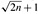 individuals in a room, we can expect at least two to have the same birthday. For n = 365, if k = 28, the expected number of pairs with the same birthday is (28 · 27)/(2 · 365) ≈ 1.0356.
Thus, with at least 28 people, we expect to find at least one matching pair of birth-days. On Mars, where a year is 669 Martian days long, we need at least 38 Martians.
The first analysis, which used only probabilities, determined the number of people required for the probability to exceed 1/2 that a matching pair of birthdays exists, and the second analysis, which used indicator random variables, determined the number such that the expected number of matching birthdays is 1. Although the exact numbers of people differ for the two situations, they are the same asymptotically: 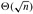.
Consider the process of randomly tossing identical balls into b bins, numbered 1, 2,..., b. The tosses are independent, and on each toss the ball is equally likely to end up in any bin. The probability that a tossed ball lands in any given bin is 1/b. Thus, the ball-tossing process is a sequence of Bernoulli trials (see Appendix C.4) with a probability 1/b of success, where success means that the ball falls in the given bin. This model is particularly useful for analyzing hashing (see Chapter 11), and we can answer a variety of interesting questions about the ball-tossing process. (Problem C-1 asks additional questions about balls and bins.)
How many balls fall in a given bin? The number of balls that fall in a given bin follows the binomial distribution b(k; n, 1/b). If n balls are tossed, equation (C.36) tells us that the expected number of balls that fall in the given bin is n/b.
How many balls must one toss, on the average, until a given bin contains a ball? The number of tosses until the given bin receives a ball follows the geometric distribution with probability 1/b and, by equation (C.31), the expected number of tosses until success is 1/(1/b) = b.
How many balls must one toss until every bin contains at least one ball? Let us call a toss in which a ball falls into an empty bin a "hit." We want to know the expected number n of tosses required to get b hits.
The hits can be used to partition the n tosses into stages. The ith stage consists of the tosses after the (i - 1)st hit until the ith hit. The first stage consists of the first toss, since we are guaranteed to have a hit when all bins are empty. For each toss during the ith stage, there are i - 1 bins that contain balls and b - i + 1 empty bins. Thus, for each toss in the ith stage, the probability of obtaining a hit is (b-i +1)/b.
Let ni denote the number of tosses in the ith stage. Thus, the number of tosses required to get b hits is 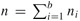. Each random variable ni has a geometric distribution with probability of success (b - i + 1)/b and, by equation (C.31),
By linearity of expectation,
The last line follows from the bound (A.7) on the harmonic series. It therefore takes approximately b ln b tosses before we can expect that every bin has a ball. This problem is also known as the coupon collector's problem, and says that a person trying to collect each of b different coupons must acquire approximately b ln b randomly obtained coupons in order to succeed.
Suppose you flip a fair coin n times. What is the longest streak of consecutive heads that you expect to see? The answer is Θ(lg n), as the following analysis shows.
We first prove that the expected length of the longest streak of heads is O(lg n). The probability that each coin flip is a head is 1/2. Let Aik be the event that a streak of heads of length at least k begins with the ith coin flip or, more precisely, the event that the k consecutive coin flips i, i + 1, ..., i + k - 1 yield only heads, where 1 ≤ k ≤ n and 1 ≤ i ≤ n -k +1. Since coin flips are mutually independent, for any given event Aik, the probability that all k flips are heads is
and thus the probability that a streak of heads of length at least 2 ⌈lg n⌉ begins in position i is quite small. There are at most n - 2 ⌈lg n⌉ + 1 positions where such a streak can begin. The probability that a streak of heads of length at least 2 ⌈lg n⌉ begins anywhere is therefore
since by Boole's inequality (C.18), the probability of a union of events is at most the sum of the probabilities of the individual events. (Note that Boole's inequality holds even for events such as these that are not independent.)
We now use inequality (5.10) to bound the length of the longest streak. For j = 0, 1, 2,..., n, let Lj be the event that the longest streak of heads has length exactly j, and let L be the length of the longest streak. By the definition of expected value,
We could try to evaluate this sum using upper bounds on each Pr {Lj} similar to those computed in inequality (5.10). Unfortunately, this method would yield weak bounds. We can use some intuition gained by the above analysis to obtain a good bound, however. Informally, we observe that for no individual term in the summation in equation (5.11) are both the factors j and Pr {Lj} large. Why? When j ≥ 2 ⌈lg n⌉, then Pr {Lj} is very small, and when j < 2 ⌈lgn⌉, then j is fairly small. More formally, we note that the events Lj for j = 0, 1,..., n are disjoint, and so the probability that a streak of heads of length at least 2 ⌈lg n⌉ begins anywhere is 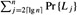. By inequality (5.10), we have 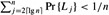. Also, noting that 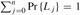, we have that 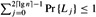. Thus, we obtain
The chances that a streak of heads exceeds r ⌈lg n⌉ flips diminish quickly with r. For r ≥ 1, the probability that a streak of r ⌈lg n⌉ heads starts in position i is
|
Pr {Ai,r⌈ lg n⌉} |
= |
1/2r⌈ lg n⌉ |
|
≤ |
1/nr. |
Thus, the probability is at most n/nr = 1/nr-1 that the longest streak is at least r ⌈lg n⌉, or equivalently, the probability is at least 1 - 1/nr-1 that the longest streak has length less than r ⌈lg n⌉.
As an example, for n = 1000 coin flips, the probability of having a streak of at least 2 ⌈lg n⌉ = 20 heads is at most 1/n = 1/1000. The chances of having a streak longer than 3 ⌈lg n⌉ = 30 heads is at most 1/n2 = 1/1,000,000.
We now prove a complementary lower bound: the expected length of the longest streak of heads in n coin flips is Ω(lg n). To prove this bound, we look for streaks of length s by partitioning the n flips into approximately n/s groups of s flips each. If we choose s = ⌊(lg n)/2⌋, we can show that it is likely that at least one of these groups comes up all heads, and hence it is likely that the longest streak has length at least s = Ω(lg n). We will then show that the longest streak has expected length Ω(lg n).
We partition the n coin flips into at least ⌊n/ ⌊(lg n)/2⌋⌋ groups of ⌊(lg n)/2⌋ consecutive flips, and we bound the probability that no group comes up all heads. By equation (5.9), the probability that the group starting in position i comes up all heads is
|
Pr {Ai,⌊ (lg n)/⌋} |
= |
1/2⌊(lgn)/⌋ |
|
≥ |
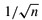. |
The probability that a streak of heads of length at least ⌊(lg n)/2⌋ does not begin in position i is therefore at most 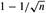. Since the ⌊n/ ⌊(lg n)/2⌋⌋ groups are formed from mutually exclusive, independent coin flips, the probability that every one of these groups fails to be a streak of length ⌊(lg n)/2⌋ is at most
For this argument, we used inequality (3.11), 1 + x ≤ ex , and the fact, which you might want to verify, that 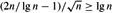 for sufficiently large n.
Thus, the probability that the longest streak exceeds ⌊(lg n)/2⌋ is
| (5.12) | 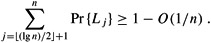 |
We can now calculate a lower bound on the expected length of the longest streak, beginning with equation (5.11) and proceeding in a manner similar to our analysis of the upper bound:
As with the birthday paradox, we can obtain a simpler but approximate analysis using indicator random variables. We let Xik = I{Aik} be the indicator random variable associated with a streak of heads of length at least k beginning with the ith coin flip. To count the total number of such streaks, we define
Taking expectations and using linearity of expectation, we have
By plugging in various values for k, we can calculate the expected number of streaks of length k. If this number is large (much greater than 1), then many streaks of length k are expected to occur and the probability that one occurs is high. If this number is small (much less than 1), then very few streaks of length k are expected to occur and the probability that one occurs is low. If k = c lg n, for some positive constant c, we obtain
If c is large, the expected number of streaks of length c lg n is very small, and we conclude that they are unlikely to occur. On the other hand, if c < 1/2, then we obtain E [X] = Θ(1/n1/2-1) = Θ(n1/2), and we expect that there will be a large number of streaks of length (1/2) lg n. Therefore, one streak of such a length is very likely to occur. From these rough estimates alone, we can conclude that the length of the longest streak is Θ(lg n).
As a final example, we consider a variant of the hiring problem. Suppose now that we do not wish to interview all the candidates in order to find the best one. We also do not wish to hire and fire as we find better and better applicants. Instead, we are willing to settle for a candidate who is close to the best, in exchange for hiring exactly once. We must obey one company requirement: after each interview we must either immediately offer the position to the applicant or must tell them that they will not receive the job. What is the trade-off between minimizing the amount of interviewing and maximizing the quality of the candidate hired?
We can model this problem in the following way. After meeting an applicant, we are able to give each one a score; let score(i) denote the score given to the ith applicant, and assume that no two applicants receive the same score. After we have seen j applicants, we know which of the j has the highest score, but we do not know if any of the remaining n - j applicants will have a higher score. We decide to adopt the strategy of selecting a positive integer k < n, interviewing and then rejecting the first k applicants, and hiring the first applicant thereafter who has a higher score than all preceding applicants. If it turns out that the best-qualified applicant was among the first k interviewed, then we will hire the nth applicant. This strategy is formalized in the procedure ON-LINE-MAXIMUM(k, n), which appears below. Procedure ON-LINE-MAXIMUM returns the index of the candidate we wish to hire.
ON-LINE-MAXIMUM(k, n) 1 bestscore ← -∞ 2 for i ← to k 3 do if score(i) > bestscore 4 then bestscore ← score(i) 5 for i ← k + 1 to n 6 do if score(i) > bestscore 7 then return i 8 return n
We wish to determine, for each possible value of k, the probability that we hire the most qualified applicant. We will then choose the best possible k, and implement the strategy with that value. For the moment, assume that k is fixed. Let M(j) = max≤i≤j {score(i)} denote the maximum score among applicants 1 through j. Let S be the event that we succeed in choosing the best-qualified applicant, and let Si be the event that we succeed when the best-qualified applicant is the ith one interviewed. Since the various Si are disjoint, we have that 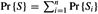. Noting that we never succeed when the best-qualified applicant is one of the first k, we have that Pr {Si} = 0 for i = 1, 2,..., k. Thus, we obtain
We now compute Pr {Si}. In order to succeed when the best-qualified applicant is the ith one, two things must happen. First, the best-qualified applicant must be in position i, an event which we denote by Bi. Second, the algorithm must not select any of the applicants in positions k + 1 through i - 1, which happens only if, for each j such that k + 1 ≤ j ≤ i - 1, we find that score(j) < bestscore in line 6. (Because scores are unique, we can ignore the possibility of score(j) = bestscore.) In other words, it must be the case that all of the values score(k + 1) through score(i - 1) are less than M(k); if any are greater than M(k) we will instead return the index of the first one that is greater. We use Oi to denote the event that none of the applicants in position k + 1 through i - 1 are chosen. Fortunately, the two events Bi and Oi are independent. The event Oi depends only on the relative ordering of the values in positions 1 through i - 1, whereas Bi depends only on whether the value in position i is greater than all the values 1 through i - 1. The ordering of positions 1 through i - 1 does not affect whether i is greater than all of them, and the value of i does not affect the ordering of positions 1 through i - 1. Thus we can apply equation (C.15) to obtain
Pr {Si} = Pr {Bi ∩ Oi} = Pr {Bi} Pr {Oi}.
The probability Pr {Bi} is clearly 1/n, since the maximum is equally likely to be in any one of the n positions. For event Oi to occur, the maximum value in positions 1 through i - 1 must be in one of the first k positions, and it is equally likely to be in any of these i - 1 positions. Consequently, Pr {Oi} = k/(i - 1) and Pr {Si} = k/(n(i - 1)). Using equation (5.13), we have
We approximate by integrals to bound this summation from above and below. By the inequalities (A.12), we have
Evaluating these definite integrals gives us the bounds
which provide a rather tight bound for Pr {S}. Because we wish to maximize our probability of success, let us focus on choosing the value of k that maximizes the lower bound on Pr {S}. (Besides, the lower-bound expression is easier to maximize than the upper-bound expression.) Differentiating the expression (k/n)(ln n - ln k) with respect to k, we obtain
Setting this derivative equal to 0, we see that the lower bound on the probability is maximized when ln k = ln n - 1 = ln(n/e) or, equivalently, when k = n/e. Thus, if we implement our strategy with k = n/e, we will succeed in hiring our best-qualified applicant with probability at least 1/e.
How many people must there be in a room before the probability that someone has the same birthday as you do is at least 1/2? How many people must there be before the probability that at least two people have a birthday on July 4 is greater than 1/2?
Suppose that balls are tossed into b bins. Each toss is independent, and each ball is equally likely to end up in any bin. What is the expected number of ball tosses before at least one of the bins contains two balls?
For the analysis of the birthday paradox, is it important that the birthdays be mutually independent, or is pairwise independence sufficient? Justify your answer.
How many people should be invited to a party in order to make it likely that there are three people with the same birthday?
What is the probability that a k-string over a set of size n is actually a k-permutation? How does this question relate to the birthday paradox?
Suppose that n balls are tossed into n bins, where each toss is independent and the ball is equally likely to end up in any bin. What is the expected number of empty bins? What is the expected number of bins with exactly one ball?
Sharpen the lower bound on streak length by showing that in n flips of a fair coin, the probability is less than 1/n that no streak longer than lg n-2 lg lg n consecutive heads occurs.
With a b-bit counter, we can ordinarily only count up to 2b - 1. With R. Morris's probabilistic counting, we can count up to a much larger value at the expense of some loss of precision.
We let a counter value of i represent a count of ni for i = 0, 1,..., 2b -1, where the ni form an increasing sequence of nonnegative values. We assume that the initial value of the counter is 0, representing a count of n0 = 0. The INCREMENT operation works on a counter containing the value i in a probabilistic manner. If i = 2b - 1, then an overflow error is reported. Otherwise, the counter is increased by 1 with probability 1/(ni+1 - ni), and it remains unchanged with probability 1 - 1/(ni+1 - ni).
If we select ni = i for all i ≥ 0, then the counter is an ordinary one. More interesting situations arise if we select, say, ni = 2i-1 for i > 0 or ni = Fi (the ith Fibonacci number-see Section 3.2).
For this problem, assume that 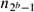 is large enough that the probability of an overflow error is negligible.
Show that the expected value represented by the counter after n INCREMENT operations have been performed is exactly n.
The analysis of the variance of the count represented by the counter depends on the sequence of the ni. Let us consider a simple case: ni = 100i for all i ≥ 0. Estimate the variance in the value represented by the register after n INCREMENT operations have been performed.
Thus problem examines three algorithms for searching for a value x in an unsorted array A consisting of n elements.
Consider the following randomized strategy: pick a random index i into A. If A[i] = x, then we terminate; otherwise, we continue the search by picking a new random index into A. We continue picking random indices into A until we find an index j such that A[j] = x or until we have checked every element of A. Note that we pick from the whole set of indices each time, so that we may examine a given element more than once.
Write pseudocode for a procedure RANDOM-SEARCH to implement the strategy above. Be sure that your algorithm terminates when all indices into A have been picked.
Suppose that there is exactly one index i such that A[i] = x. What is the expected number of indices into A that must be picked before x is found and RANDOM-SEARCH terminates?
Generalizing your solution to part (b), suppose that there are k ≥ 1 indices i such that A[i] = x. What is the expected number of indices into A that must be picked before x is found and RANDOM-SEARCH terminates? Your answer should be a function of n and k.
Suppose that there are no indices i such that A[i] = x. What is the expected number of indices into A that must be picked before all elements of A have been checked and RANDOM-SEARCH terminates?
Now consider a deterministic linear search algorithm, which we refer to as DETERMINISTIC-SEARCH. Specifically, the algorithm searches A for x in order, considering A[1], A[2], A[3],..., A[n] until either A[i] = x is found or the end of the array is reached. Assume that all possible permutations of the input array are equally likely.
Suppose that there is exactly one index i such that A[i] = x. What is the expected running time of DETERMINISTIC-SEARCH? What is the worst-case running time of DETERMINISTIC-SEARCH?
Generalizing your solution to part (e), suppose that there are k ≥ 1 indices i such that A[i] = x. What is the expected running time of DETERMINISTIC-SEARCH? What is the worst-case running time of DETERMINISTIC-SEARCH? Your answer should be a function of n and k.
Suppose that there are no indices i such that A[i] = x. What is the expected running time of DETERMINISTIC-SEARCH? What is the worst-case running time of DETERMINISTIC-SEARCH?
Finally, consider a randomized algorithm SCRAMBLE-SEARCH that works by first randomly permuting the input array and then running the deterministic linear search given above on the resulting permuted array.
Letting k be the number of indices i such that A[i] = x, give the worst-case and expected running times of SCRAMBLE-SEARCH for the cases in which k = 0 and k = 1. Generalize your solution to handle the case in which k ≥ 1.
Which of the three searching algorithms would you use? Explain your answer.
|
|
< Day Day Up > |
|